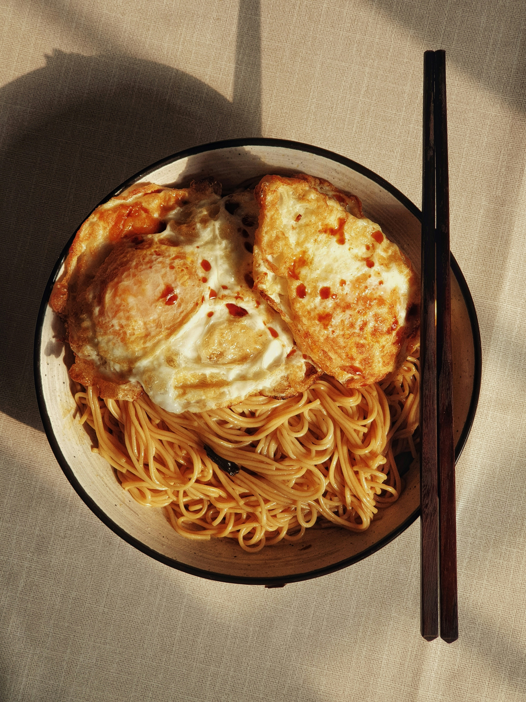

Breakfast Ramen Bowl
Recipe Description
This breakfast ramen bowl is a delicious and hearty meal that combines the flavors of traditional ramen with breakfast ingredients. Despite the name, this dish is perfect for any time of the day. Listed below are the ingredients and instructions to make this tasty breakfast ramen bowl. Enjoy!
Ingredients
- 2 tbsp olive oil
- 1 sweet potato, peeled and cut into bite-sized pieces
- salt and freshly ground black pepper as needed
- 1 medium yellow or white onion, diced, if desired
- 1 tbsp vegetable oil
- 1 tbsp minced fresh garlcic
- 1 tbsp chopped fresh ginger
- 32 fl oz vegtable broth
- 2 large eggs
- 2 breakfast sausage patties, cooked and sliced
li>
2 packages of ramen noodles, 1 seasoning packet discarded
Shaved almonds, for garnish
dried cranberries, for garnish
Steps
- Heat vegetable oil in a cast iron skillet. Add the sweet potatos and season with a pinch of salt and pepper. Cook potatoes stirring occassionally for 5 minutes. Add 1/2 of diced onions and continue to cook until potatoes are tender, 7-10 minutes. Remove from heat and set aside.
- for broth, heat olive oil in a dutch oven or large pot over medium heat. Add garlic, ginger and remaining onions, and cook for 3-5 minutes until onions are translucent. Add vegetable broth and bring to a boil. Reduce heat and simmer for 10 minutes.
- Grease a skillet with cooking spray or oil, crack an egg into the skillet and and partially submerge the egg into the broth until egg white settles, then release the egg into the broth. Cook undisturbed for 2-3 minutes and repeat with the second egg. Cover and cook for 2-3 minutes until the eggs are cooked to your liking. Remove eggs from broth and set aside.
- Remove eggs from broth with laddle. Reduce heat on the broth and cover. Tatse and adjust with salt and pepper or your favorite seasonings. Add ramen noodles to the broth and cook for 3-4 minutes until noodles are tender. Remove from heat.
- Cook ramen and breakfast sausage according to label directions.
- Build Your Bowl: Add noodles, sausage, sweet potatoes, and egg to a bowl. Spoon broth into the bowl. Garnish with shaved almonds and cranberries.
- Enjoy!

Home